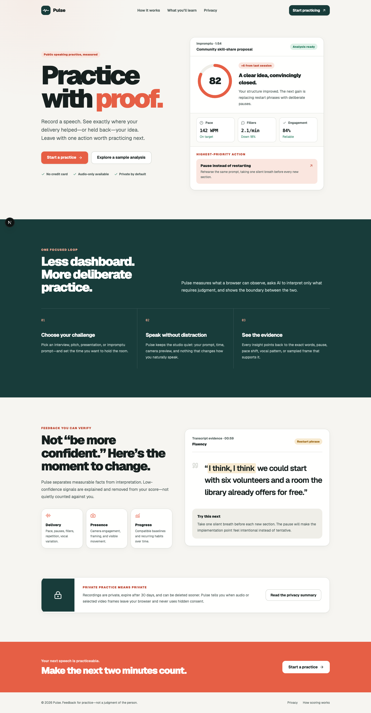
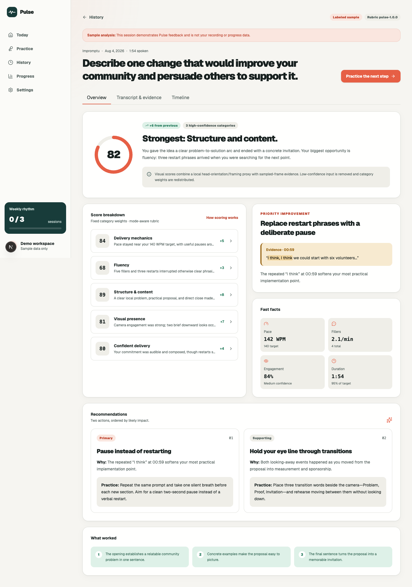

Choose your challenge
Practice interviews, presentations, impromptu answers, or pitches with curated and custom prompts.
Record a short response and turn it into evidence-linked feedback on delivery, fluency, structure, visual presence, and confident communication.

Built for focused practice—without distracting live coaching.
Practice interviews, presentations, impromptu answers, or pitches with curated and custom prompts.
Capture audio and optional video in a focused studio with transparent privacy controls.
Trace each insight to exact words, pauses, pace shifts, vocal patterns, or sampled frames.
Pulse combines deterministic speech measurements with structured AI evaluation. Missing or unreliable signals are omitted—not silently scored as zero.
